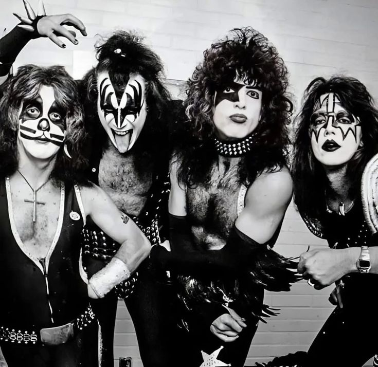
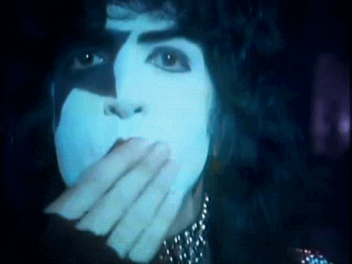
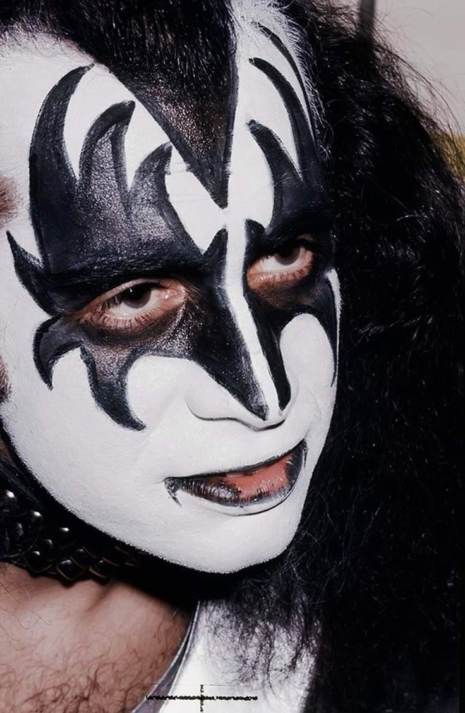
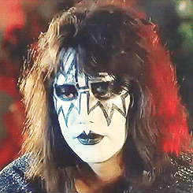
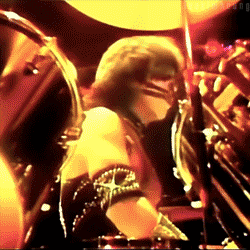

KISS é uma banda americana de hard rock, formada em Nova York em 1973.
A banda ficou famosa não apenas pelas músicas, mas também pelas maquiagens, roupas extravagantes, performances e efeitos especiais nos shows.
Em 1974, o KISS lançou seu primeiro álbum, chamado KISS. No começo, a banda ainda não era muito conhecida, mas suas apresentações ajudaram a conquistar cada vez mais fãs.
O grupo chamou atenção por transformar os shows de rock em grandes espetáculos, com iluminação, efeitos especiais e personagens.
O sucesso aumentou com o lançamento de álbuns como Destroyer (1976), considerado um dos trabalhos mais importantes da banda. Nesse período, músicas como “Rock and Roll All Nite” ajudaram a transformar o KISS em um dos maiores nomes do rock.


